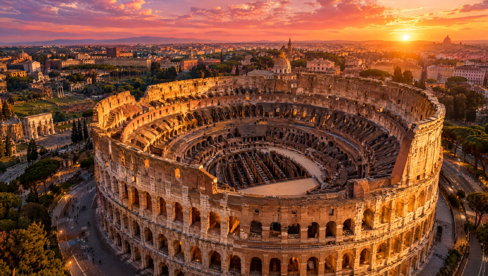
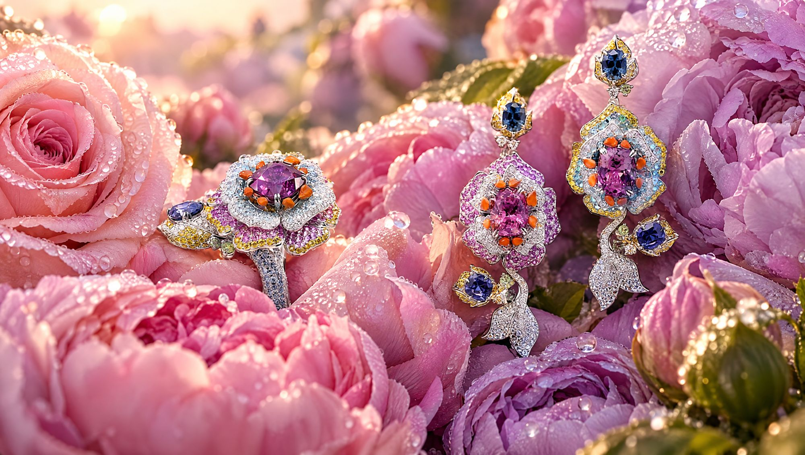
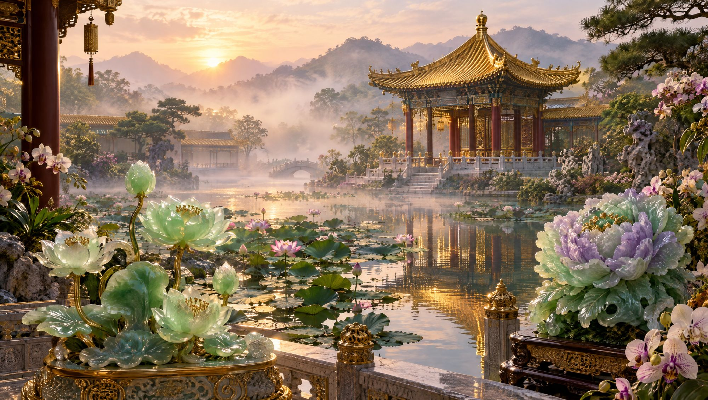

Italy · Thailand
Alessio Boschi
Live a Precious Journey
Live a Precious Journey
 Venice
Venice
 Historica
Historica Historica
Historica HistoricaHistorica
HistoricaHistorica The Atelier
The Atelier HistoricaMasterpieces
HistoricaMasterpieces Thalassa
ThalassaFrom the palaces of Venice to the reefs of the Pacific: choose a stop on the journey.

A luxurious past, with stories and personalities from European history, the fascinating Orient and glorious Empires.
Many of the jewels are crafted with details taken from the finest architectural motifs: a palace becomes a necklace, a fountain becomes a ring, a temple roof becomes a row of sapphires.
The gothic lace of the Doge's Palace façade, its arches and quatrefoils, turned into a cascade of drops falling from a row of South Sea pearls.
18K gold, South Sea pearls, emerald drops and yellow diamonds. Set by hand in our Bangkok atelier.


Bernini's river gods leave the fountain and hold up a stone the colour of its water.
Sculpted 18K gold, a large green centre stone, blue gems paved along the shank.
The three blue roofs of the temple, where emperors prayed for harvest, become rows of calibrated sapphires.
Calibrated blue sapphires, a ruby bead tassel, white gold and diamonds.
From the Greek word for the sea. Sea creatures among the multicoloured shades of the coral reef: thanks to their hidden movements, the jewels seem carried by the tides.
Enter the reef
Flora and fauna, erupting volcanoes, exploding stars, blue glaciers, stunning sunsets and mystical dawns.
Enter the garden
Imperial Purple Peony, Orchid, Rabbit, Re Sole: the stone of emperors, carved into flowers.
Enter the garden
Little bejewelled gift boxes, worn as rings, earrings or charms. Open one: a hidden gift is waiting.
Open a box
Organic and geometric, colourful and intricate, wearable and full of surprises. Designed by an Italian, made by hand in Bangkok.
Every piece is one of a kind or made in very few variations. Tell us which place you want to visit: we bring it to you.